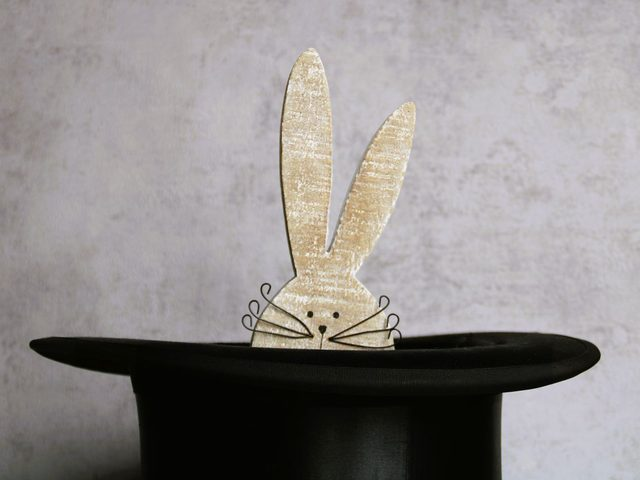
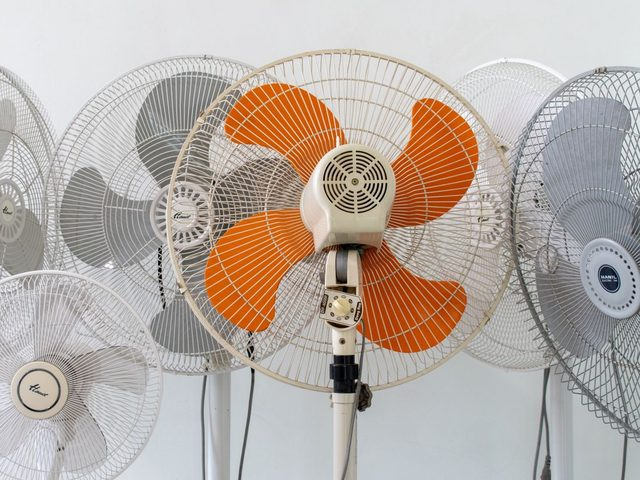
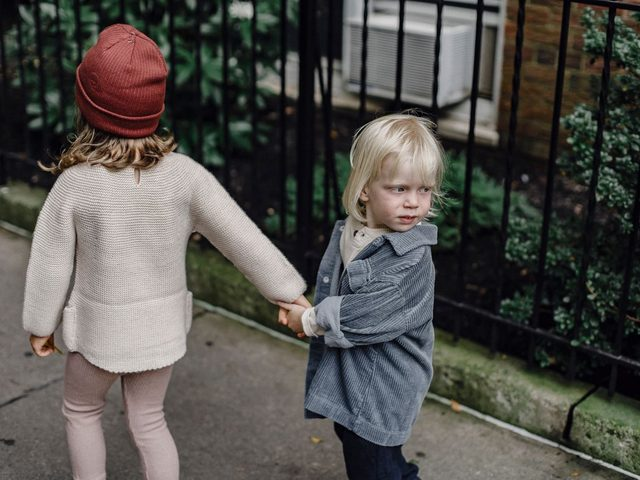

VOCABULARY · LALA WORD UNIT 2
The Secret Clothes of Animals．一字多義（二）
變色龍會「turn」green（變成綠色），不是「轉」綠色；party 除了派對還有「政黨」，fan 除了「粉絲」還是「電扇」。這個單元有 8 個主題單字、14 個更多單字，最後整理容易搞混的 look／watch／see／read。
共 22 個單字．點 🔊 聽發音

1timen. / v. / prep.
時間；時光；時刻；幾點；（做某事的）時候；次；次數；計時；乘以（times）
time - timed - timed - timing
- 1n.時間；時光 time flies 時光飛逝；take your time 慢慢來Time flies when you are having fun.玩得開心時，時間過得特別快。
- 2n.時刻；幾點 Do you have the time? 現在幾點？What time does the movie start?電影幾點開始？
- 3n.（做某事的）時候 It's time to… 該…了；on time 準時；in time 及時It's time to go to bed.該上床睡覺了。
- 4n.次；次數 last time 上一次；next time 下一次I have been to Tainan three times.我去過臺南三次。
- 5v.計時Can you time me when I swim?我游泳的時候你可以幫我計時嗎？
- 6prep.乘以（times）Three times four is twelve.三乘以四等於十二。
2turnv. / n.
變成；扭動（開關）；（使）轉身；轉向；轉彎；輪到的機會
turn - turned - turned - turning
- 1v.變成The leaves turn yellow in autumn.秋天葉子變黃了。
- 2v.扭動（開關） turn on 打開；turn off 關掉Please turn off the lights when you leave.離開時請關燈。
- 3v.（使）轉身；轉向She turned and smiled at me.她轉過身對我微笑。
- 4n.轉彎 make a right / left turn 右轉／左轉Make a left turn at the bank.在銀行那裡左轉。
- 5n.輪到的機會 take turns + V-ing 輪流It's your turn to clean the board.輪到你擦黑板了。

3magicn. / adj.
魔法；魔術；魅力；神奇的力量；有魔力的；魔術的
- 1n.魔法；魔術 work like magic 效果神奇The witch used magic to turn the frog into a prince.女巫用魔法把青蛙變成王子。
- 2n.魅力；神奇的力量I love the magic of the night market.我愛夜市那種迷人的魅力。
- 3adj.有魔力的；魔術的 magic trick 魔術My uncle can do a magic trick with cards.我叔叔會用撲克牌變魔術。

4partyn. / v.
派對；社交聚會；政黨；狂歡；開派對
party - partied - partied - partying；複數 parties
- 1n.派對；社交聚會 have / throw a party 辦派對We are going to have a party for Mom's birthday.我們要為媽媽的生日辦一個派對。
- 2n.政黨Which party will win the election?哪一個政黨會贏得選舉？
- 3v.狂歡；開派對After the final exam, the students partied all night.期末考完後，學生們狂歡了一整晚。

5usev. / n.
使用；利用（別人）；說；寫（語言、字詞）；使用；用途
use - used - used - using
- 1v.使用 use up 用完May I use your phone?我可以用你的手機嗎？
- 2v.利用（別人）He is not your friend. He is just using you.他不是你的朋友，他只是在利用你。
- 3v.說；寫（語言、字詞）Don't use bad words.不要說髒話。
- 4n.使用 out of use 停用；make use of 利用The elevator is out of use today.電梯今天停用。
- 5n.用途Bamboo has many uses.竹子有很多用途。

6safeadj. / n.
安全的；可靠的；謹慎的；平安的；沒受傷的；保險箱
safe - safer - safest；副詞 safely
- 1adj.安全的It's not safe to swim in this river.在這條河游泳不安全。
- 2adj.可靠的；謹慎的Dad is a safe driver.爸爸開車很謹慎。
- 3adj.平安的；沒受傷的 safe and sound 安然無恙The lost boy came home safe and sound.走失的男孩平安無事地回家了。
- 4n.保險箱Grandma keeps her gold in a safe.奶奶把她的金子放在保險箱裡。

7walkv. / n.
走路；步行；遛（狗）；散步；步行的路程
walk - walked - walked - walking
- 1v.走路；步行 walk away 走開I walk to school every day.我每天走路上學。
- 2v.遛（狗）It's my job to walk the dog after dinner.晚餐後遛狗是我的工作。
- 3n.散步 go for / take a walk 散步Let's go for a walk in the park.我們去公園散步吧。
- 4n.步行的路程The MRT station is a ten-minute walk from here.捷運站離這裡走路十分鐘。

8picturen. / v.
圖畫；照片；情況；了解；想像
picture - pictured - pictured - picturing
- 1n.圖畫 draw a picture of 畫一張…的圖Kevin drew a picture of his family.Kevin 畫了一張他家人的圖。
- 2n.照片 take a picture 拍照Can you take a picture of us?你可以幫我們拍一張照片嗎？
- 3n.情況；了解 get the picture 了解情況OK, I get the picture now.好，我現在懂了。
- 4v.想像Picture yourself on a sunny beach.想像你自己在陽光燦爛的海灘上。
9allpron. / adv.
全部；所有；完全地
- 1pron.全部；所有 all day 整天；all the time 一直All of my friends came to my party.我所有的朋友都來參加我的派對。
- 2adv.完全地 all alone 孤零零地；not… at all 一點也不The dog got mud all over its body.狗弄得全身都是泥巴。

10bandn.
樂團；帶子；橡皮筋
複數 bands
- 1n.樂團My cousin plays the drums in a band.我表哥在樂團裡打鼓。
- 2n.帶子；橡皮筋 rubber band 橡皮筋She tied her hair with a rubber band.她用橡皮筋綁頭髮。

11canaux. / n. / v.
能；會；可以（允許）；可以…嗎（請求）；有可能；罐頭；金屬罐；把…裝罐
助動詞過去式 could；動詞 can - canned - canned - canning
- 1aux.能；會Can you ride a bike?你會騎腳踏車嗎？
- 2aux.可以（允許）You can go out after you finish your homework.寫完功課你就可以出去。
- 3aux.可以…嗎（請求）Could you pass me the salt?可以請你把鹽遞給我嗎？
- 4aux.有可能It can be very cold here in winter.這裡冬天可能會很冷。
- 5n.罐頭；金屬罐Please put the empty cans in the recycling bin.請把空罐子放進回收桶。
- 6v.把…裝罐This factory cans tuna.這家工廠生產鮪魚罐頭。
12classn.
班級；全班同學；課；課程；（車、機艙）等級；社會階級
複數 classes
- 1n.班級；全班同學There are 28 students in our class.我們班有 28 個學生。
- 2n.課；課程We have a P.E. class this afternoon.我們今天下午有體育課。
- 3n.（車、機艙）等級It costs a lot to fly first class.搭頭等艙很貴。
- 4n.社會階級Many people in the working class work long hours.許多勞工階級的人工時很長。

13fann. / v.
狂熱愛好者；迷；扇子；電風扇；搧（風）
fan - fanned - fanned - fanning
- 1n.狂熱愛好者；迷 a big fan of 是…的大粉絲My sister is a big fan of that singer.我姊姊是那位歌手的超級粉絲。
- 2n.扇子；電風扇It's hot. Can you turn on the fan?好熱。你可以開電風扇嗎？
- 3v.搧（風）She fanned her face with a book.她用書搧臉。

14fightv. / n.
打架；吵架；打仗；打鬥；戰鬥
fight - fought - fought - fighting
- 1v.打架；吵架；打仗 fight against 對抗；fight for 爭取My two little brothers often fight over toys.我的兩個弟弟常常為了玩具吵架。
- 2n.打鬥；戰鬥Two cats had a fight in the yard.兩隻貓在院子裡打了一架。
15freeadj. / v.
免費的；有空的；自由的；沒有…的；釋放
free - freed - freed - freeing
- 1adj.免費的The drinks are free today.今天飲料免費。
- 2adj.有空的 free time 空閒時間Are you free this Sunday?你這個星期天有空嗎？
- 3adj.自由的 feel free to 儘管The bird is free now. It can fly anywhere.這隻鳥現在自由了，牠可以飛到任何地方。
- 4adj.沒有…的 free of / from 沒有…的This cake is sugar-free.這個蛋糕不含糖。
- 5v.釋放They freed the fish back into the sea.他們把魚放回海裡。

16handn. / v.
手；（鐘錶的）指針；幫忙；掌聲；遞給；交
hand - handed - handed - handing
- 1n.手；（鐘錶的）指針The hour hand is on the six.時針指在六。
- 2n.幫忙 give / lend + 人 + a hand 幫忙Can you give me a hand with these boxes?你可以幫我搬這些箱子嗎？
- 3n.掌聲 give a big hand 鼓掌Let's give her a big hand!我們給她熱烈的掌聲！
- 4v.遞給；交 hand in 繳交Please hand in your homework tomorrow.請明天交作業。

17placen. / v.
地點；地方；名次；放置；舉行；發生（take place）；下（訂單）
place - placed - placed - placing
- 1n.地點；地方This is a nice place for a picnic.這是野餐的好地方。
- 2n.名次Amy won first place in the race.Amy 賽跑得第一名。
- 3v.放置Place the cup on the table, please.請把杯子放在桌上。
- 4v.舉行；發生（take place） take place 舉行；發生The concert will take place in the park.音樂會將在公園舉行。
- 5v.下（訂單） place an order 下訂單I placed an order for two pizzas.我訂了兩個披薩。

18pleaseint. / v.
請；拜託；好的，謝謝（接受時）；使高興；取悅
please - pleased - pleased - pleasing
- 1int.請；拜託Please close the door.請關門。
- 2int.好的，謝謝（接受時）A: More juice? B: Yes, please.A：還要果汁嗎？ B：好，謝謝。
- 3v.使高興；取悅It's hard to please everyone.要讓每個人都滿意很難。

19rulen. / v.
規則；習慣；經驗法則（a rule of thumb）；統治；支配；控制
rule - ruled - ruled - ruling
- 1n.規則；習慣 follow / break the rules 遵守／違反規則；make it a rule to 習慣Don't break the school rules.不要違反校規。
- 2n.經驗法則（a rule of thumb） a rule of thumb 經驗法則As a rule of thumb, drink eight glasses of water a day.一般來說，一天要喝八杯水。
- 3v.統治The king ruled the country for forty years.國王統治這個國家四十年。
- 4v.支配；控制Don't let your phone rule your life.別讓手機控制你的生活。
20shakev. / n.
搖動；震動；發抖；擺脫（shake off）；奶昔
shake - shook - shaken - shaking
- 1v.搖動；震動 shake one's head 搖頭；shake hands 握手The house shook during the earthquake.地震時房子在搖晃。
- 2v.發抖 shake like a leaf 抖個不停He was shaking with cold.他冷得發抖。
- 3v.擺脫（shake off） shake off 擺脫I can't shake off this cold.我這個感冒一直好不了。
- 4n.奶昔I'd like a chocolate shake, please.我要一杯巧克力奶昔。

21studyv. / n.
讀書；學習；仔細研究；研究；調查；書房
study - studied - studied - studying；複數 studies
- 1v.讀書；學習She is studying for the test.她在準備考試。
- 2v.仔細研究The scientist studies how bees talk to each other.這位科學家研究蜜蜂怎麼互相溝通。
- 3n.研究；調查A new study shows that sleep helps memory.一項新研究顯示睡眠有助於記憶。
- 4n.書房Dad is reading in his study.爸爸在書房看書。

22withprep.
和…一起；用（工具）；有；帶著；對於；支持；站在…這邊
- 1prep.和…一起I went to the zoo with my cousins.我和表兄弟姊妹去動物園。
- 2prep.用（工具）He cut the paper with scissors.他用剪刀剪紙。
- 3prep.有；帶著Who is the girl with long hair?那個長頭髮的女孩是誰？
- 4prep.對於Be careful with the knife.用刀子要小心。
- 5prep.支持；站在…這邊Don't worry. I'm with you.別擔心，我支持你。
FOCUS
易混淆字：都是「看」，有什麼不同？
| 單字 | 用法 | 例句 |
|---|---|---|
| look | 有意地把視線轉過去，常接 at；也可以當「看起來」＋形容詞 | Look at the rainbow!／You look tired. |
| watch | 專注地看一段時間（電視、比賽、會動的東西） | We watched a baseball game on TV. |
| see | 不是刻意去看，自然「看到」；也表示「看得見」 | I saw a cat on the roof.／I can't see the board. |
| read | 看「文字」並了解意思（書、報紙、標誌）；也可以讀出別人的心思 | She reads the news every morning. |
watch、see 後面可以接「受詞＋原形動詞／V-ing」：I saw him cross the street.／We watched the kids playing.
FOCUS
一字多義：最常見 vs. 容易忽略的意思
| 單字 | 最常見的意思 | 容易忽略的意思 |
|---|---|---|
| turn | 轉彎；轉動 | 變成；輪到 |
| party | 派對 | 政黨 |
| safe | 安全的 | 保險箱 |
| can | 能；會 | 罐頭 |
| fan | 粉絲 | 電扇；搧風 |
| free | 免費的 | 有空的；不含…的 |
| hand | 手 | 指針；幫忙；掌聲 |
| shake | 搖動 | 奶昔 |
| study | 讀書 | 書房；研究 |
FOCUS
常用片語
| 片語 | 意思 | 例句 |
|---|---|---|
| take turns + V-ing | 輪流 | We take turns washing the dishes. |
| take place | 舉行；發生 | The game took place last Friday. |
| give + 人 + a hand | 幫某人忙 | Can you give me a hand? |
| hand in | 繳交 | Hand in your test papers now. |
| feel free to | 儘管… | Feel free to ask questions. |
| safe and sound | 安然無恙 | They got home safe and sound. |
| out of use | 停用 | This old road is out of use. |